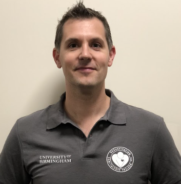

Instructor Guide 2026/27 — part 6 of 6. Who's who on Student Faculty this year, and a message from RMD's founder.
Alessandro · Tess · Issy · Tegan
Team Teachers focuses mostly on instructors and assessors. The team recruits new and returning instructors and assessors over the summer, then helps organise Instructor's Weekend in October. Through the year they organise teaching rooms and roles for exam nights, sort out on-the-night issues, and run socials for instructors and assessors (previous years: Country Girl, Circo, in town, and post-Christmas pizza nights).
Teachers Team Lead: AXP1098@student.bham.ac.uk
Stella · Ellie · Holly · Georgia
Admin handles everything BLS-student-related: liaising with administration leads across Medicine, Dentistry, Nursing, Physiotherapy and Pharmacy to allocate students to courses, managing absences, answering queries via the BLS email account, coordinating RAPs, and planning examination nights. After each course, Admin also issues students their European Resuscitation Council certificate via CoSY.
Admin Team Lead: sxs2048@student.bham.ac.uk
BLS Email Account: colmds-c-rmdbirmingham@adf.bham.ac.uk
Krishan · Megan · Sophie · Jaimini
Logistics covers equipment, budget and tech: ordering and maintaining everything used on teaching nights (QCPRs, AEDs, choking vests, PPE, alcohol wipes), plus building the course database, registers and examination forms so teaching and exams run smoothly for candidates, instructors and assessors.
Team Logistics Lead: kxp214@student.bham.ac.uk
For photos of everyone on Student Faculty and Senior Faculty this year, see the Faculty pages:

RMD: Resuscitation. Mentorship. Development began in 1995, set up by three of us as medical undergraduates at Birmingham. We were all active in the University Lifesaving Club — I was chair — and it was that shared enthusiasm for teaching, practising and assessing life support each week that led us to replace didactic BLS lectures with something different: a near-peer, interdisciplinary programme built and run by students.
We recruited strong students, trained them as instructors and assessors, and published original research showing the scheme worked — pioneering this model across other Higher Education Institutions.
Since then the course has grown: accredited by the European Resuscitation Council and endorsed by the Faculty of Intensive Care Medicine. Through our community arm, we've taught life support to many thousands of secondary school pupils across the West Midlands, other staff and students at the University of Birmingham, a broad range of community events, and to Birmingham City Football Club, the University's official partner.
Today it's overseen by a faculty of clinical and non-clinical staff (I'm still one of them) and run day-to-day by a student faculty. It's one of the largest courses of its kind in Europe, cited by the GMC as an innovative teaching method, and it's since been set up at other UK institutions carrying the same community and enthusiasm.
Setting up RMD, and staying part of it through my career as a student, doctor in training and now consultant, is something I'm genuinely proud of. Those of us who've been around longest still learn from the energy, professionalism and fun you bring every year. RMD is what it is because of you — thank you for all you bring to it.